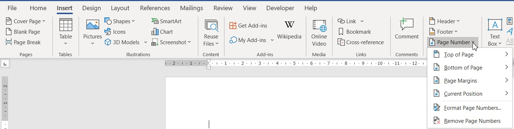

Bine ați venit într-un loc unde puteți învăța funcționalitățile de bază din Microsoft Word!
- Selectează textul pe care vrei să îl numerotezi.
- Mergi la tab-ul „Insert” (Inserare).
- Apasă pe pictograma „Page Number”.
- Alege un stil de numerotare.
Numerotarea automată te ajută să structurezi idei în ordine logică. Word oferă stiluri variate: cu cifre, litere, numere romane, iar numerotarea se actualizează automat dacă adaugi sau elimini elemente.
